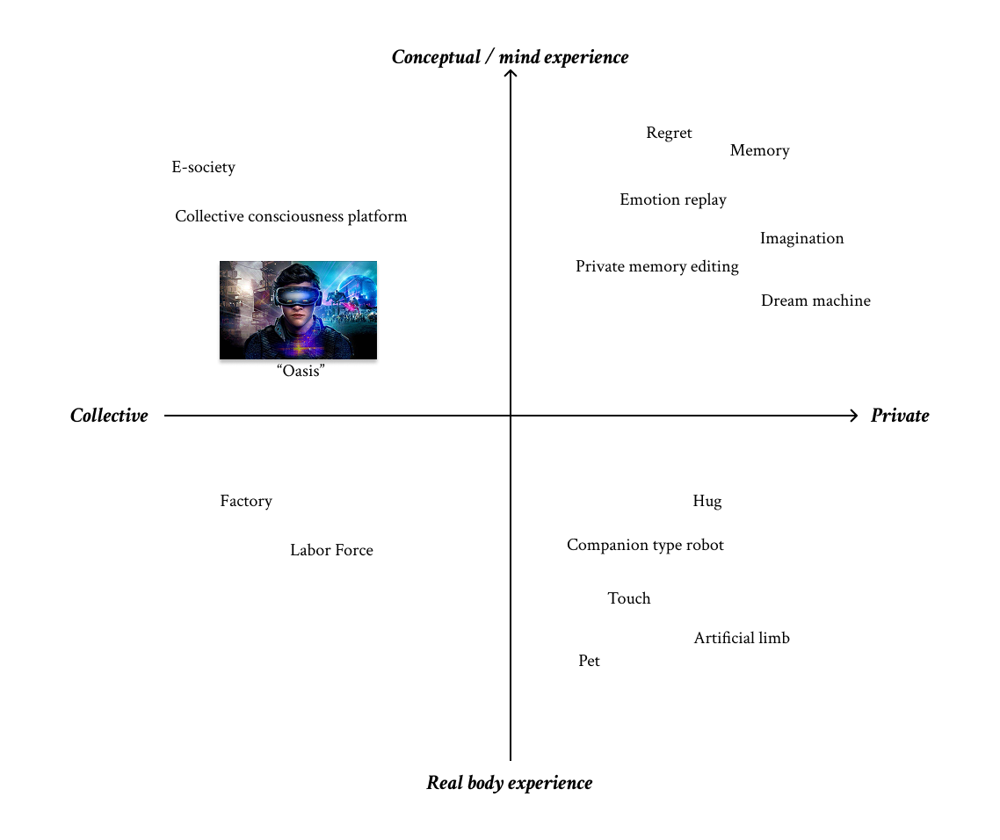
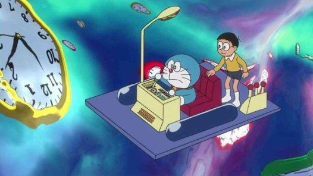
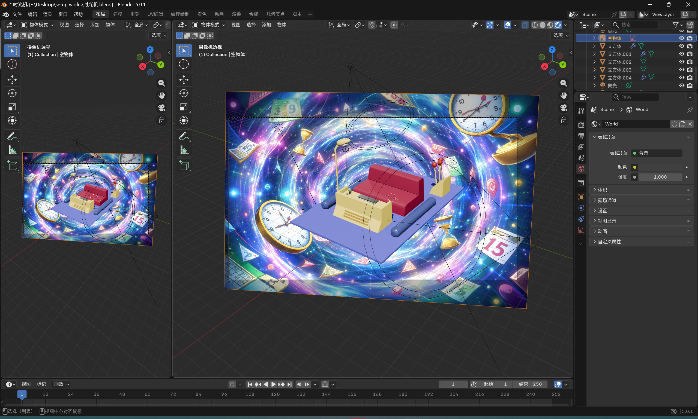
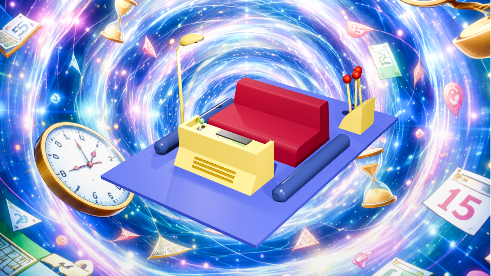

Ruby Li, qli16@inside.artcenter.edu
I used AI to help me build this webpage.

My matrix is based on two simple values: collective vs. private, and psychological experience vs. bodily experience. I use it to think about who an experience belongs to, and whether it mainly happens in the mind or through the body.
While thinking about this matrix, I was reminded of the film Ready Player One and its virtual world, the “Oasis.” In that world, people are almost fully living inside a virtual environment, and the boundary between the virtual world and the real world becomes very blurred. This idea sits close to the upper-left area of my matrix, where experience is more collective and more mental than physical.
Another important inspiration for me is Doraemon’s time machine. As a classic concept in science fiction, a time machine allows people to travel across time—either to the future or back to the past. I feel this idea fits with the theme of archeology of the future, because it imagines future technology as something that looks back at time itself.
At the same time, I realized that Doraemon himself is also a very interesting figure. He is a companion-type robot, and in the original story he is actually a “failed” or outdated model. I remember that the qualified version of this robot is yellow and has ears, while Doraemon does not. I don’t remember all the exact plot details anymore, but this idea of being an imperfect or discarded robot stayed with me.
Even so, Doraemon has emotions, he has someone he likes, and he forms real friendships—especially with Nobita. He also travels through time together with Nobita. Both Doraemon and the time machine strongly relate to the elements in my matrix: private versus collective experience, emotional and mental experience, and embodied presence.

I built the model starting from simple block shapes to get the proportions right. And I also used ChatGPT to generate the background picture.

